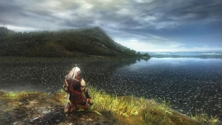
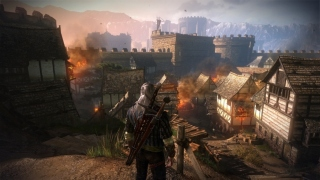
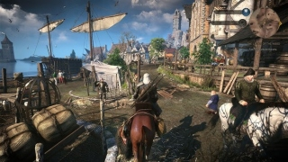

The Witcher 1 Enhanced Edition
The Witcher tiene lugar en un mundo fantástico medieval y relata la historia de Geralt de Rivia.
Ver más

The Witcher 2 Assassins of Kings
Geralt es interrogado acerca del asesinato del rey de Temeria, Foltest.
Ver más

The Witcher 3 Wild Hunt
Geralt recibe una carta de su amante Yennefer diciendo que necesita localizarlo lo antes posible.
Ver másThe Witcher es una serie de videojuegos de rol de acción y fantasía desarrollados por CD Projekt RED, basados en la saga de novelas de Geralt de Rivia, escritas por el autor polaco "Andrzej Sapkowski"